Loading ...
|
5-3-2
|
Paraguay | 0 | - | 0 | Australia |
3-4-2-1
|
| HT 0-0 | ||||||
|
FIFA World CupFriday 26 June 2026
|
||||||
- Venue
- San Francisco Bay Area Stadium
- Attendance
- 68,827
- Referee
- Clément Turpin
Substitution46'
A. Maidana
Mauricio
Substitution67'
G. Ávalos
Á. Arce
Yellow card77'
D. Gómez
Substitution84'
O. Alderete
J. Canale
- 2
Substitution90+2'
D. Gómez
D. Bobadilla
M. Galarza
J. Alonso
Whistle45+7'
45+7'
Yellow card46'
J. Irvine
Substitution58'
C. Volpato
A. Hrustić
- 2
Substitution84'
J. Irvine
P. Okon-Engstler
N. Irankunda
T. Yengi
Paraguay | |
|---|---|
Goalkeeper | |
| 12 | O. Gill |
Defender | |
| 2 | G. Velázquez |
| 3 | O. Alderete 84' |
| 4 | J. Cáceres |
| 15 | G. Gómez |
| 26 | A. Maidana 46' |
Midfielder | |
| 8 | D. Gómez 77'90+2' |
| 14 | A. Cubas |
| 23 | M. Galarza 90+2' |
Forward | |
| 19 | J. Enciso |
| 21 | G. Ávalos 67' |
Substitutes | |
| 6 | J. Alonso 90+2' |
| 11 | Mauricio 46' |
| 13 | J. Canale 84' |
| 16 | D. Bobadilla 90+2' |
| 18 | Á. Arce 67' |
Australia | |
Goalkeeper | |
| 18 | P. Beach |
Defender | |
| 3 | A. Circati |
| 19 | H. Souttar |
| 25 | L. Herrington |
Midfielder | |
| 5 | J. Bos |
| 8 | C. Metcalfe |
| 13 | A. O'Neill |
| 16 | A. Behich |
| 20 | C. Volpato 58' |
| 22 | J. Irvine 46'84' |
Forward | |
| 17 | N. Irankunda 84' |
Substitutes | |
| 10 | A. Hrustić 58' |
| 24 | P. Okon-Engstler 84' |
| 26 | T. Yengi 84' |


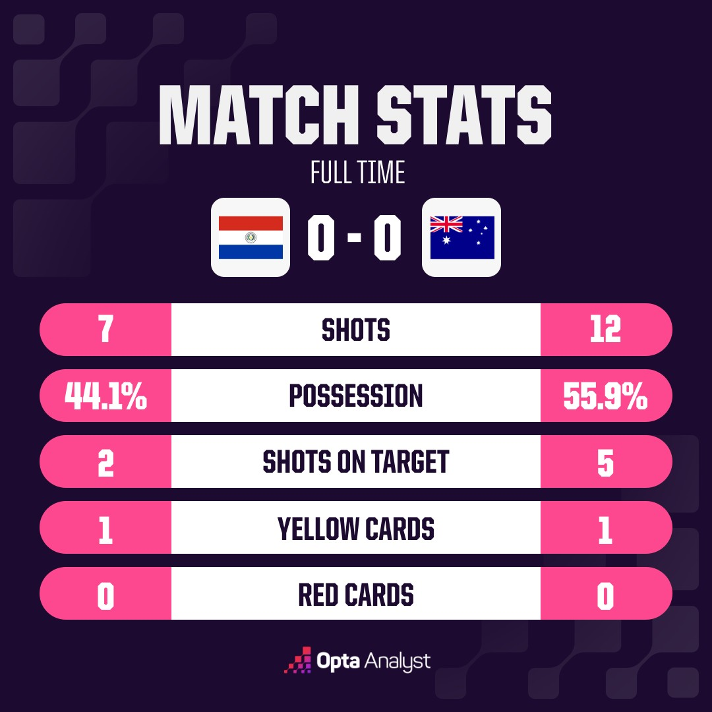
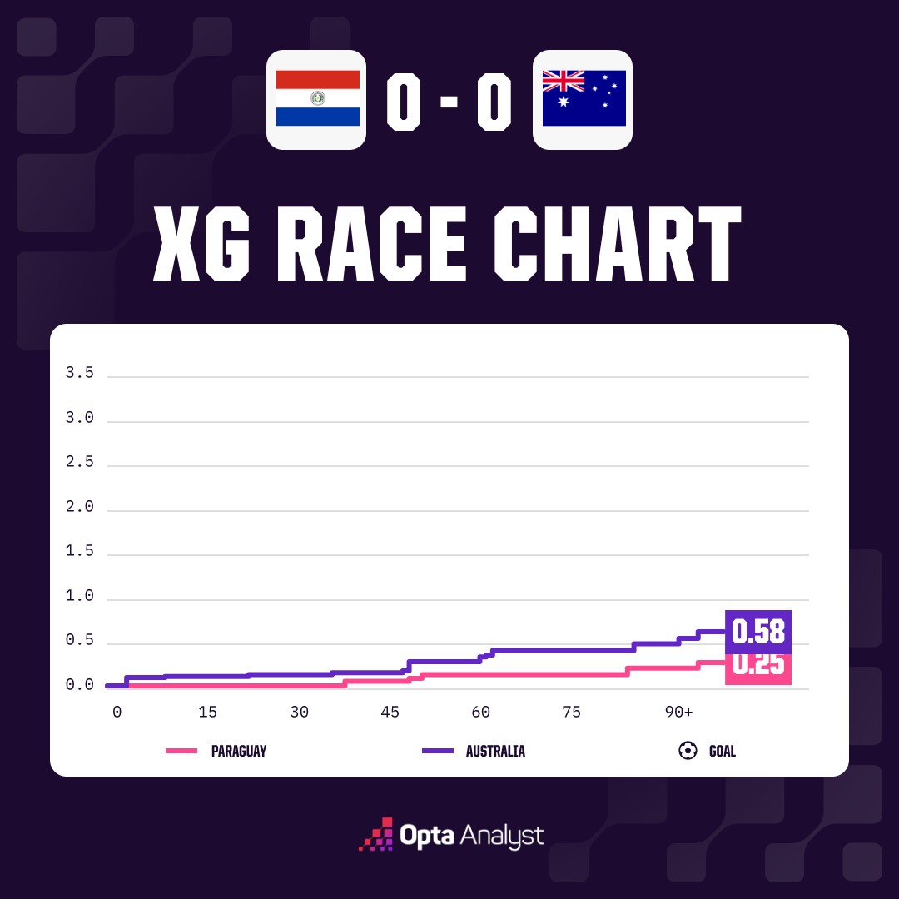
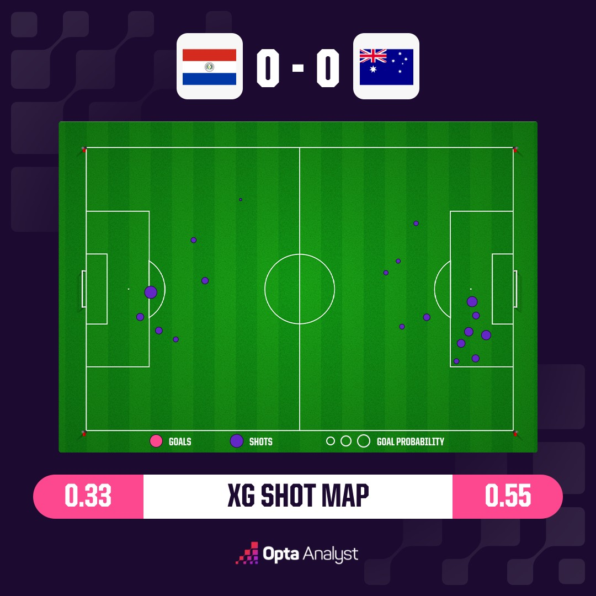
90+6'
That's it! The referee blows the whistle and we have reached full-time. The final score at San Francisco Bay Area Stadium is Paraguay 0-0 Australia.
90+4'
Mauricio goes in on Jordan Bos and concedes a foul. The free-kick is not in a particularly dangerous area from Paraguay’s viewpoint, though.
90+3'
Orlando Gill has made 5 saves, the first time he has made at least 5 saves in a match in the FIFA World Cup since facing Türkiye on 20th June 2026 (5 saves).
90+3'
SAVED! Good work from Orlando Gill, who stands firm to deny Tete Yengi, who managed to get a shot away from inside the Paraguay area.
90+3'
Save! A big stop from Patrick Beach, who reacts to keep out Mauricio's attempt from inside the area.
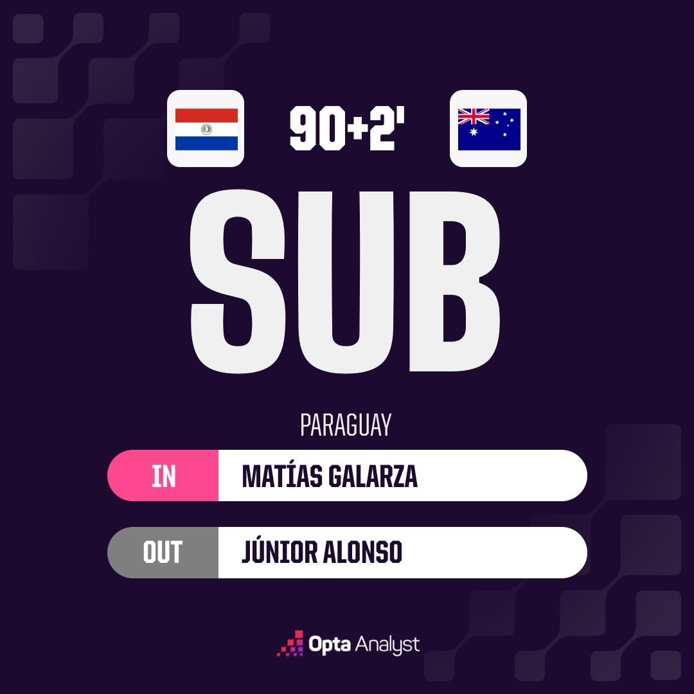
90+2'
Paraguay are making a tactical change. Matías Galarza is leaving the field and in their place comes Júnior Alonso – we will soon see if this switch has the desired impact.
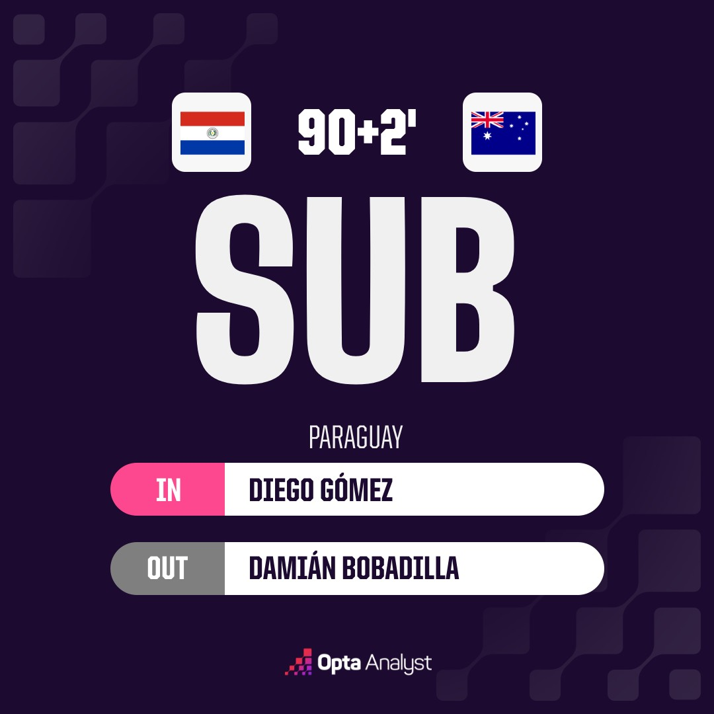
90+2'
Substitution! Damián Bobadilla replaces Diego Gómez for Paraguay as the manager shuffles the pack. Can Damián Bobadilla make an impression as this match continues?
90+1'
A chance goes begging as Jordan Bos gets off a shot that does not hit the target. They might have done better with that one, but instead it is a goal-kick to Paraguay.
86'
There is plenty of possession for Paraguay, with 65.16% compared to Australia 34.84 % in the last 15 minutes. However, Paraguay have not been able to turn that dominance of the ball into a goal.
84'
Nestory Irankunda’s match is over as Australia decide to make a substitution. Tete Yengi enters the field in what looks like a tactical change.
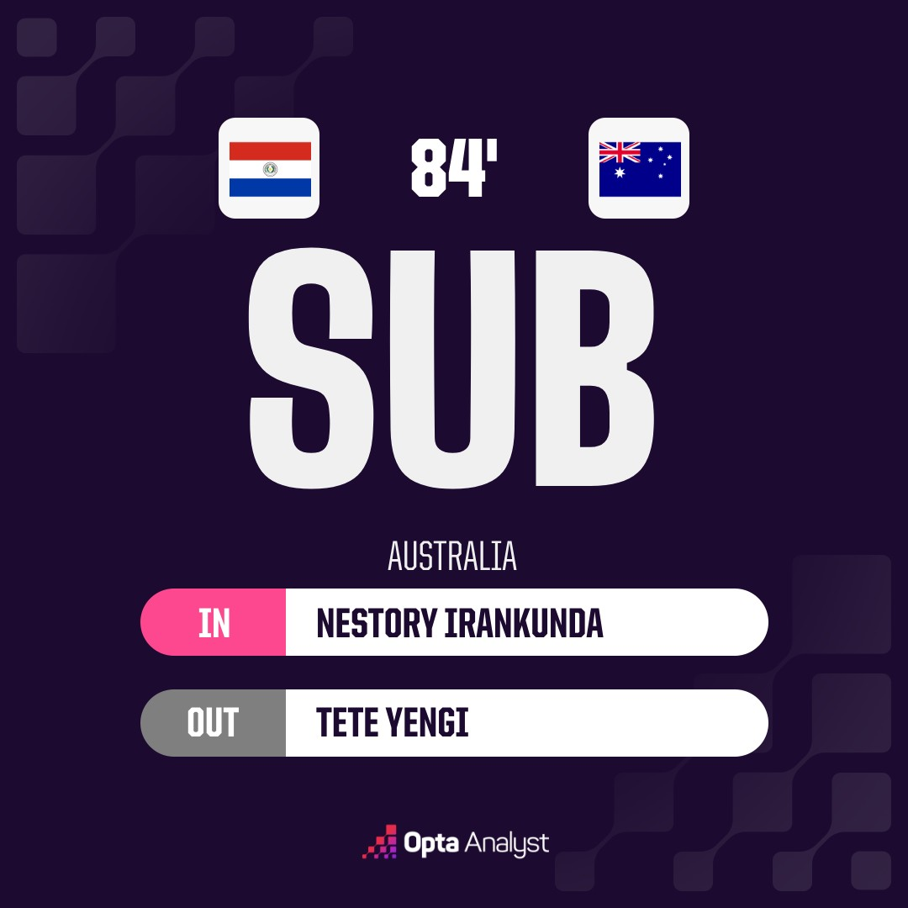
84'
Australia are making a tactical change. Jackson Irvine is leaving the field and in their place comes Paul Okon-Engstler – we will soon see if this switch has the desired impact.
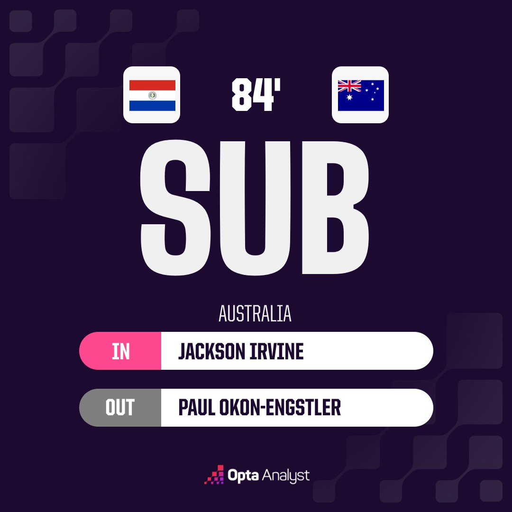
84'
A change for Paraguay, as they are forced into a substitution with Omar Alderete having sustained an injury. José Canale is coming on for Paraguay now.
83'
SHOT! Jordan Bos manages to get a shot off from inside the area, but although it was heading in, they cannot get enough on it to beat Orlando Gill, who makes the save.
82'
MISS! A shot from Julio Enciso ends up being off target. They might have done a bit better with that one, but it remains Paraguay 0-0 Australia.
82'
Great block from Jackson Irvine, as they get in the way of an attempt from Julio Enciso that might have been set to cause the goalkeeper some problems. Solid defending from the Australia player.
80'
It has been 30 minutes since Paraguay last attempted a shot in this game.
77'
A yellow card for Paraguay's Diego Gómez. They will have to walk a tightrope for the rest of this match, and Australia will likely look to target them and draw a second bookable offence.
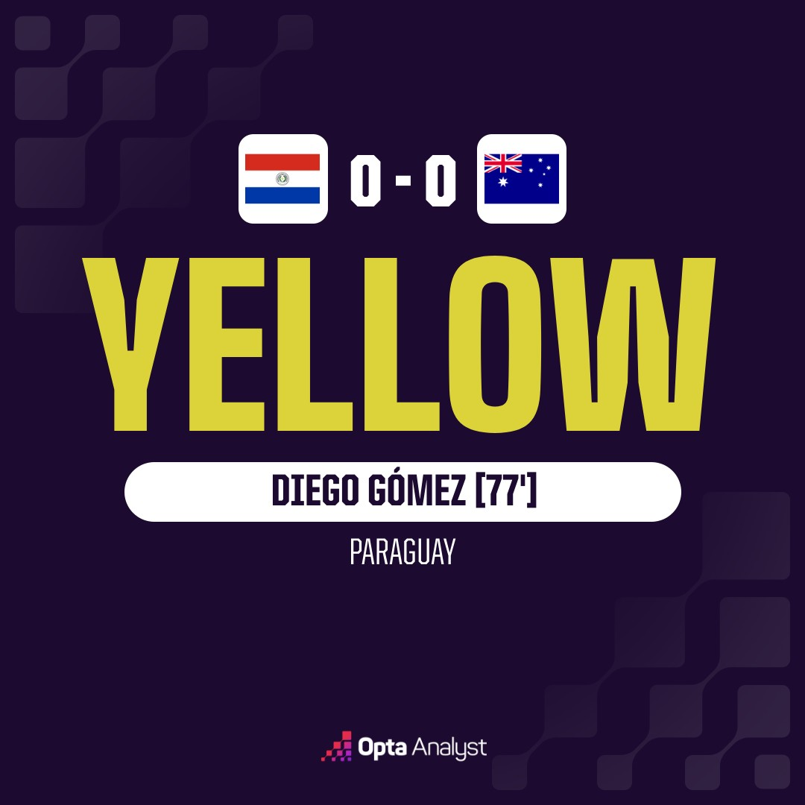
77'
A rash challenge from Diego Gómez, who sends Jordan Bos tumbling, giving Australia a free-kick. It is not in a threatening position, but it gives them a chance to get back on the ball.
76'
A foul from Matías Galarza on Jordan Bos sees Australia win a free-kick, but it is not in a dangerous position, so Paraguay should be confident they can defend it easily enough.
76'
With 15 minutes of normal time remaining, it is Australia who have had more of the ball, with 58.47% compared to Paraguay’s 41.53%.
73'
A lull in this match, as the teams prob and probe, but without much success. It has been 10 minutes since there was an attempt from either side, though Paraguay are seeing more of the ball, with 55 per cent possession to Australia’s 45 per cent during that time.
67'
The Paraguay manager is looking to the substitutes’ bench, bringing on Álex Arce in place of Gabriel Ávalos. Will the change make a difference? Let’s find out!
66'
This match is into the last 25 minutes now, and before it goes into the final stages, let’s check on the shots. There have been 13 in total – 4 from Paraguay, and 9 from Australia. Of those attempts, 4 have hit the target – 1 from Paraguay and 3 from Australia.
63'
Mauricio goes in on Jackson Irvine and concedes a foul. The free-kick is not in a particularly dangerous area from Paraguay’s viewpoint, though.
61'
A foul from Nestory Irankunda on Omar Alderete sees Paraguay win a free-kick, but it is not in a dangerous position, so Australia should be confident they can defend it easily enough.
61'
Great block from Andrés Cubas, as they get in the way of an attempt from Ajdin Hrustić that might have been set to cause the goalkeeper some problems. Solid defending from the Paraguay player.
60'
BLOCK! An intervention from Gustavo Gómez might have just prevented a goal, with the defending player getting in the way of an attempt from Nestory Irankunda. Solid defending there!
59'
MISS! The score remains 0-0, with Paraguay relieved after Australia’s Nestory Irankunda goes for goal but sends their attempt off target. Not one to write home about, that one.
58'
A substitution for Australia sees Cristian Volpato replaced by Ajdin Hrustić. There does not appear to be any obvious sign of an injury, so that is a tactical switch.
54'
Corner! Paraguay are pushing for a goal and now they have an opportunity from this set-piece.
50'
SAVE! A shot from outside the box by Paraguay Mauricio was heading in, but Australia Patrick Beach keeps it out with a smart stop.
48'
No luck! Andrés Cubas takes on a shot that, had they got it right, might have been set to test the goalkeeper, but instead it is sent off target and Australia come away unscathed.
46'
A yellow card for Australia's Jackson Irvine. They will have to walk a tightrope for the rest of this match, and Paraguay will likely look to target them and draw a second bookable offence.
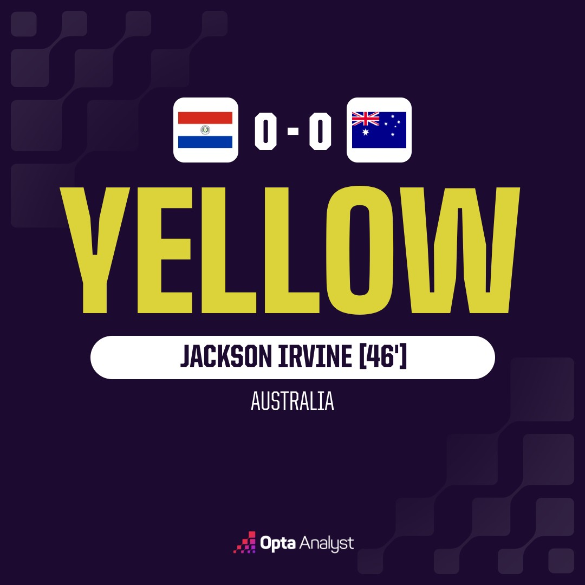
46'
Jackson Irvine goes in on Julio Enciso and concedes a foul. The free-kick is not in a particularly dangerous area from Australia’s viewpoint, though.
46'
A chance goes begging as Juan José Cáceres gets off a shot that does not hit the target. They might have done better with that one, but instead it is a goal-kick to Australia.
46'
A substitution for Paraguay sees Alexandro Maidana replaced by Mauricio. There does not appear to be any obvious sign of an injury, so that is a tactical switch.
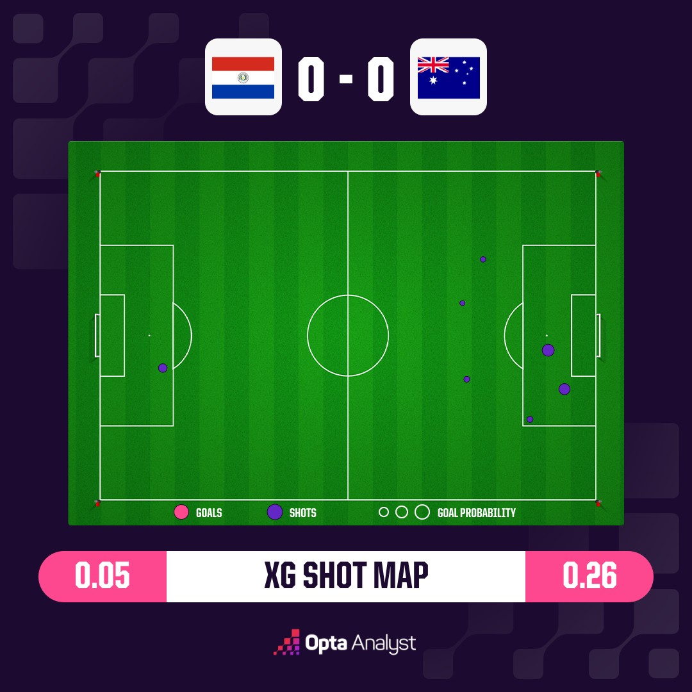
45+7'
Half-time! We reach the interval with the score level at 0-0 between Paraguay and Australia. Will we see a winner in the second half?
45+6'
A rash challenge from Cristian Volpato, who sends Andrés Cubas tumbling, giving Paraguay a free-kick. It is not in a threatening position, but it gives them a chance to get back on the ball.
45+5'
Australia are having plenty of the ball, with 65.64% possession in the last 15 minutes. However, they have been unable to transfer that possessional dominance into a goal during that period.
45+3'
MISS! The score remains 0-0, with Paraguay relieved after Australia’s Jackson Irvine goes for goal but sends their attempt off target. Not one to write home about, that one.
45+2'
SHOT! Cristian Volpato manages to get a shot off from inside the area, but although it was heading in, they cannot get enough on it to beat Orlando Gill, who makes the save.
44'
A free-kick to Australia, as Diego Gómez goes in and fouls Aziz Behich. However, Paraguay will not mind giving one away in this area too much, with plenty of distance to their goal.
41'
Paraguay have not had a shot on target so far in this game.
38'
No luck! Gabriel Ávalos takes on a shot that, had they got it right, might have been set to test the goalkeeper, but instead it is sent off target and Australia come away unscathed.
36'
SAVE! A shot from outside the box by Australia Jordan Bos was heading in, but Paraguay Orlando Gill keeps it out with a smart stop.
35'
This could be a chance for Australia, after Julio Enciso fouls Alessandro Circati, handing them a free-kick in a threatening area. A good set-piece from here could really test the Paraguay defense!
33'
No goalmouth action for some time now, with neither team having had a shot in the past 10 minutes. Will there be a moment that changes things soon? Paraguay have seen plenty of the ball, however, with 56 per cent of the possession in their favour during that period.
33'
Good play from Aziz Behich, who draws a foul from Juan José Cáceres to hand Australia a free-kick in a dangerous position. Will they create something from this set-piece?
30'
Australia have had plenty of the ball in the last 15 minutes, with 67.00% possession compared to just 33.00% for their opponents. However, there’s not been any goal to come from that possessional dominance just yet.
23'
Shot blocked! Connor Metcalfe unleashes an attempt at goal, but the ball does not reach its target thanks to Gustavo Velázquez, who makes a solid block to stem the danger – for now.
21'
A lull in this match, as the teams prob and probe, but without much success. It has been 10 minutes since there was an attempt from either side, though Paraguay are seeing more of the ball, with 55 per cent possession to Australia’s 45 per cent during that time.
19'
A chance now for Australia to get a good delivery into the box, after the ball is diverted behind for a corner. Australia have been pushing for what would be a key goal, but Paraguay have stood firm so far.
19'
A foul from Juan José Cáceres on Aiden O'Neill sees Australia win a free-kick, but it is not in a dangerous position, so Paraguay should be confident they can defend it easily enough.
17'
A free-kick to Paraguay, as Lucas Herrington goes in and fouls Diego Gómez. However, Australia will not mind giving one away in this area too much, with plenty of distance to their goal.
15'
A free-kick to Australia, as Andrés Cubas goes in and fouls Nestory Irankunda. However, Paraguay will not mind giving one away in this area too much, with plenty of distance to their goal.
12'
Free-kick! A foul from Alessandro Circati on Gabriel Ávalos. It is well away from Australia’s goal, so it is unlikely to result in a chance for Paraguay.
10'
That is a disappointing effort from Aiden O'Neill, who went for glory but got their attempt wrong, and the shot sailed off target. A frustrating moment for Australia.
6'
Free-kick! A foul from Jordan Bos on Julio Enciso. It is well away from Australia’s goal, so it is unlikely to result in a chance for Paraguay.
4'
Paraguay have a corner to defend now after Orlando Gill diverts an attempt from Jackson Irvine out of play. Can Australia take this chance to get a good delivery in and really test their opponent’s defence?
3'
It’s been tight so far, and Paraguay are making sure it stays that way with strong defensive discipline and well-timed clearances.
1'
And we are off! Strap in, folks, for this mouthwatering encounter between Australia and Paraguay at San Francisco Bay Area Stadium.
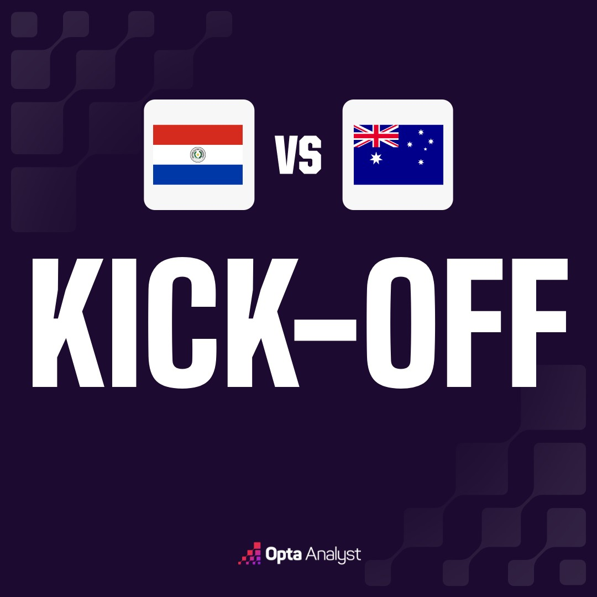
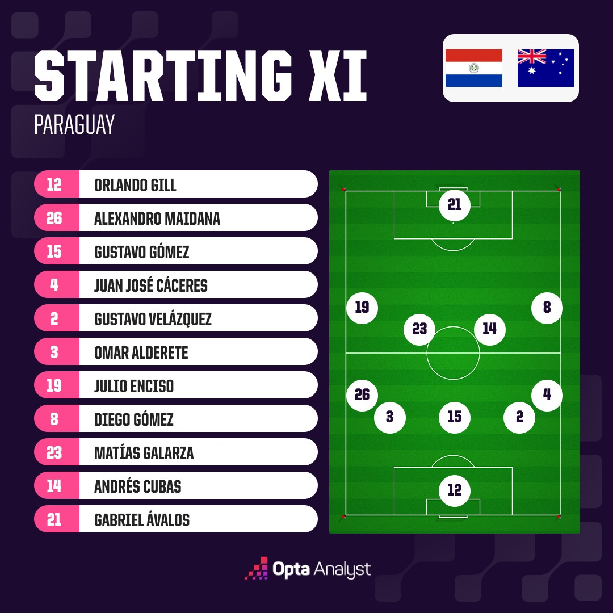
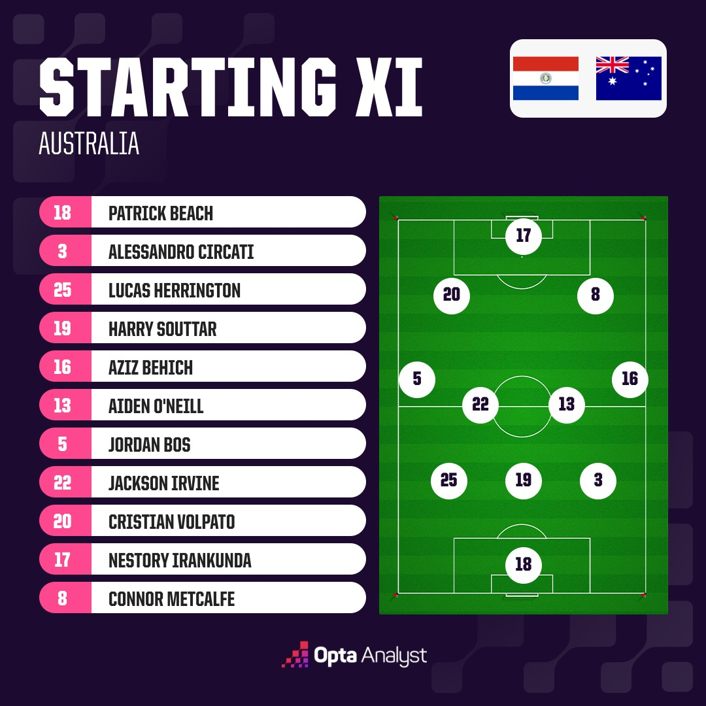
Paraguay have won their last 3 games when M. Galarza has scored
Paraguay face Australia for a FIFA World Cup group stage match at San Francisco Bay Area Stadium on Thursday with the Australian side looking to secure a place in the Round of 32.
Paraguay's last group stage match saw them triumph for the first time in the competition this season 1-0 over Türkiye on June 19. Matías Galarza netted in the win. In five games this year, they have three wins and two losses.
Australia suffered a first competition loss of the year in a 2-0 defeat against the United States in their last group stage game, a June 19 clash at Seattle Stadium. In 2026, they have won three, drawn one, and lost two.
Australia and Paraguay are second and third in the group, respectively, level on three points. Australia are currently in line for the Round of 32, while Paraguay are out of the knockout round places but still on for a place in the round of 32.
The United States are atop the group on six points and have clinched their place in the Round of 32. Türkiye are facing elimination, sitting fourth on zero points.
In the previous game between the sides in October 2010, it was Australia who won 1-0.
Paraguay have been led by Galarza and Mauricio in World Cup play. They are the team's joint top scorers with one goal. Galarza has scored the crucial first goal of the match once. Australia's leading players going forward have been Nestory Irankunda and Connor Metcalfe, who have each scored once in this season's World Cup.
In their last six matches in all competitions, Paraguay have won four and lost two. The Paraguayan side scored 10 and conceded seven over that stretch, scoring first in four of the six contests. They had three first-half goals, while their opponents netted three times in the first 45 minutes. The Australian side have won three, drawn one and lost two in their last six. The Australian side scored nine and conceded five in that period, netting first in three of the six. They had two goals in the first half, while their opponents netted four times before the break.
-
General
Possession 44.0% 43.98456.01656.0% Possession lost in defensive half 51 513030 Possession lost in middle third 71 717676 Duels 121 121122122 Duels success rate 45.5% 45.45552.45952.5% Aerial duels 45 454545 Aerial duels won 44.4% 44.44455.55655.6% Successful dribbles 5 51111 Fouls won 6 699 Offsides 0 000 Corner awarded 1 133 -
Distribution
Passes 426 426537537 Long passes 59 595858 Long passes proportion (%) 13.8% 13.8510.80110.8% Passing accuracy 77.5% 77.46581.56481.6% Passes in opponents' half 223 223234234 Passing accuracy in opponents' half (%) 70.9% 70.85267.94967.9% Total passes in the final third 91 91123123 Passing accuracy in final third (%) 57.1% 57.14360.16360.2% Forward passes 273 273344344 Forward passes (%) 64.1% 64.08564.0664.1% Through balls 1 100 Final third entries 57 575656 Penalty area entries 17 171818 Total open play crosses 6 61010 Crosses 7 71313 Crossing accuracy 0.0% 030.76930.8% -
Attack
Goals 0 000 Shots 7 71212 Shots on target 2 255 Blocked shots 1 133 Headed shots 0 011 Shots outside the box 4 455 Shots inside the box 3 377 Shots accuracy excluding blocked shots 33.3% 33.33355.55655.6% Shooting accuracy 28.6% 28.57141.66741.7% Key Passes 5 51111 -
Defence
Tackles 24 242020 Tackles success rate 70.8% 70.8336060.0% Clearances 24 241010 Interceptions 8 877 Recoveries 43 434343 Attacking third recovery 1 144 Defensive third recovery 25 252020 Midfield third recovery 17 171919 Recoveries in attacking half (%) 2.3% 2.3269.3029.3% -
Discipline
Fouls conceded 9 966 Yellow cards 1 111 Red cards 0 000